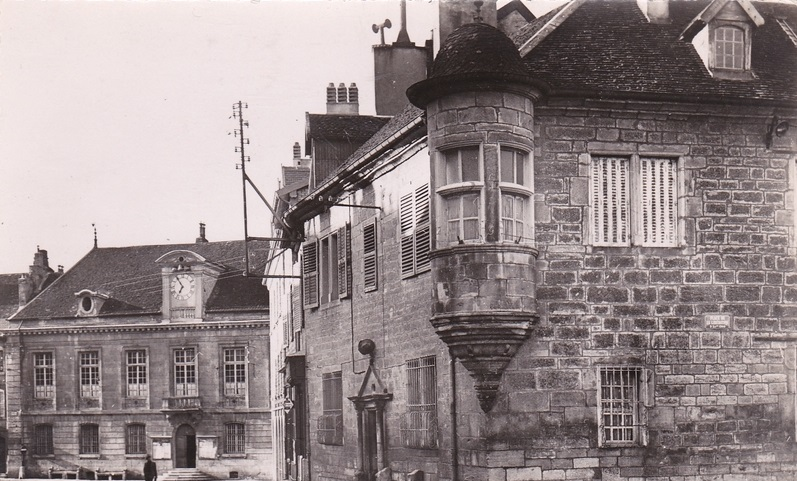
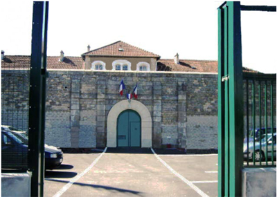

| Département | Images | Ville | Nom | Adresse | Période | Capacité | Histoire du lieu | Nombre d'exécutions |
| Doubs (25) |  |
Baume-les-Dames | Maison d'arrêt | Place de la Loi | 1799-1933 | Partie arrière du tribunal. | Aucune exécution | |
| Doubs (25) | Besançon | Maison d'arrêt, de justice et de correction de la Butte | 5, rue Louis-Pergaud | En service depuis 1885 | 208 places (1962) 276 places (2015) |
Rénovée en 1966, 1990 (construction d'un nouveau bâtiment d'accueil, destiné aussi à l'incarcération des mineurs), et en 2003. | Deux exécutions en 1891 et 1957 | |
| Doubs (25) |  |
Montbéliard | Maison d'arrêt | 2, rue du Bois Bourgeois | En service depuis 1864 | 40 places, 15 surveillants. | En forme de T. Renové suite à un incendie de juin 2005. | Aucune exécution |
| Doubs (25) | Pontarlier | Maison d'arrêt | Rue Michaud (actuelle 16, rocade Georges-Pompidou) | 1867-1926 | Située à l'arrière du palais de justice. Démolie, devenue l'hôtel de police. | Aucune exécution |
{kind=link}
{kind=link}
{kind=link}
{kind=link}
{kind=link}